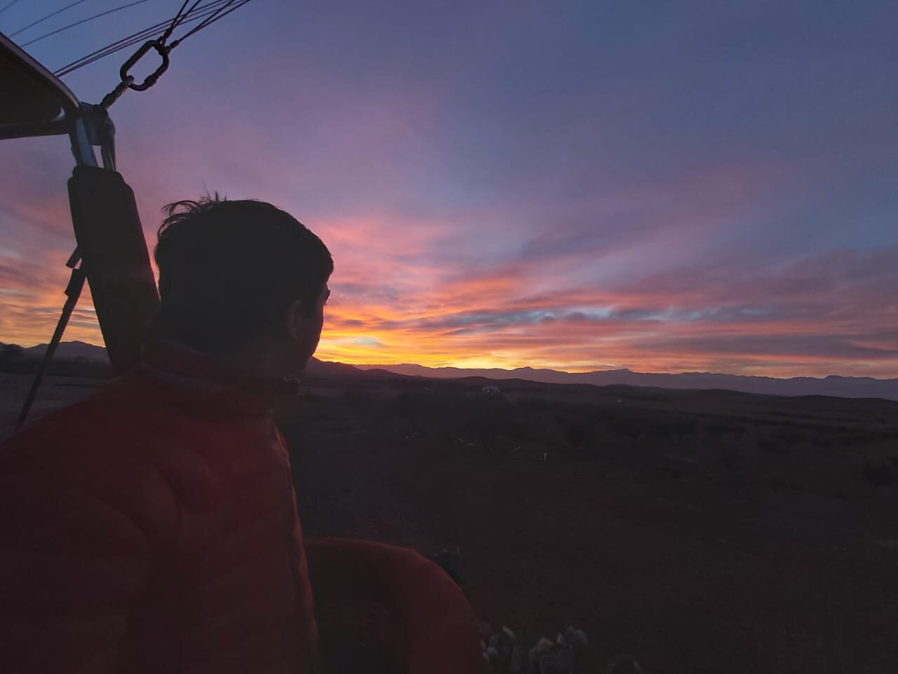

About
Designed to learn; learning to design.

Traveling is one of the greatest things I’ve done, Morocco showed me a different world and culture that only made me yearn to know more.
Daniel Quintana
I’m a game designer based in Stockholm with about four years in the industry, and I lean toward content and systems design. I graduated with a B.S. in Game Design from Full Sail University and went on to study for a Master’s in Game Design at Uppsala University in Sweden.
I started on the programming side as a Game Programmer, then moved into design leadership as a lead designer, product owner and community manager. Today I’m a game designer at Star Stable Entertainment, working on live games and seasonal content. I conceptualize, prototype and implement gameplay, balance economies, and work with other crafts from first idea through release, using player feedback and KPIs to guide decisions.
Since I was a kid, I’ve been told I was a sponge: when something catches my interest, I learn everything I can about it. Games are no different. I’m drawn to how mechanics and systems create feelings that players take for granted, and I want to understand why they work.